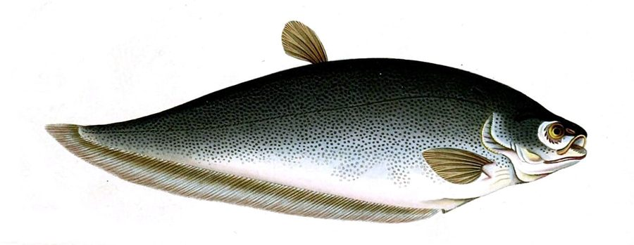

मोईBronze Featherback
Notopterus notopterus · Notopteridae · FSH-0016

- Scientific name
- Notopterus notopterus (Pallas, 1769)
- Family
- Notopteridae
- Hindi
- मोई
- Status here
- native
- IUCN
- LC
When to look कब देखें
Present all year.
मोई / Bronze Featherback
Notopterus notopterus (Pallas, 1769) — Notopteridae
मोई (ब्रॉन्ज़ फेदरबैक) — पूर्वी उत्तर प्रदेश के तालाबों, झीलों और नदियों में पाई जाने वाली एक अत्यंत प्राचीन, विशिष्ट और चपटी मीठे पानी की निवासी मछली है। यह "फ़ेदरबैक" (Featherback) परिवार की सदस्य है। इसका शरीर अत्यधिक चपटा (laterally compressed) होता है, जिसकी पीठ लगभग सीधी होती है और पेट का हिस्सा नीचे की ओर धनुषाकार (curved belly) होता है। इसका रंग कांस्य-भूरा (bronze-brown) या स्लेटी-सफ़ेद होता है। इसकी सबसे बड़ी पहचान इसका छोटा, पंख जैसा पीठ का पंख (dorsal fin) और एक बहुत लंबा गुदा पंख (anal fin) है जो पूंछ के पंख के साथ जुड़ा होता है, जिससे यह लहरदार गति (undulating waves) करते हुए पीछे की ओर भी तैर सकती है। यह आकार में आमतौर पर 30 सेंटीमीटर तक बढ़ती है।
Quick Identification त्वरित पहचान
| Feature | Description |
|---|---|
| Size | Medium-sized fish (typically 20–35 cm total length); weight 150–600 g |
| Body shape | Deeply compressed, knife-like body with a flat back and a strongly curved belly |
| Colouration | Uniformly bronze-brown, dark greyish-brown, or silvery-grey; paler belly |
| Fins | A small, feather-like dorsal fin; a very long anal fin running along the belly |
| Scales | Extremely small, fine scales covering the body and head |
| Head | Small head with a concave profile above the eyes; large mouth extending past eyes |
Field tip: Look in local fish markets or pond catches. Identified by its knife-like, flat body, a small feather-like dorsal fin, and a continuous anal fin running under the body. Unlike the larger Chitala, it has a uniform bronze color without dark spots on the tail.
Morphology आकारिकी
Biometrics (typical measurements for adult specimens in Gangetic water bodies):
| Measurement | Range |
|---|---|
| Standard length (SL) | 180–320 mm |
| Total length (TL) | 200–350 mm |
| Weight | 150–600 g |
Body structure: The body is highly compressed, deep, and knife-like. The dorsal profile is straight or slightly convex, while the ventral profile is deeply convex. The snout is obtuse. The mouth is terminal and large, with a maxillary that reaches past the hind margin of the eye. The pre-orbital bone is serrated. The dorsal fin is small and narrow, containing 7–9 soft rays. The anal fin is extremely long, containing 100–110 rays, and is confluent with the small caudal fin. Scales are very small and cycloid.
Color details: The body is uniformly bronze-brown, coppery-brown, or dark slate-grey on the back and flanks, shading to silvery-white on the abdomen. In young specimens, the body may show fine dark vertical bars. The fins are dark grey or dusky bronze.
Behaviour & Ecology व्यवहार और पारिस्थितिकी
Air-breathing undulator.
- Swim bladder lung: Possesses a highly modified swim bladder that acts as an accessory air-breathing organ, filled with vascularized network. The fish periodically rises to the surface to gulp air, allowing it to survive in warm, stagnant, low-oxygen village ponds.
- Bi-directional swimming: The long anal fin can move in undulating waves in both directions. This allows the fish to swim forward and backward with equal ease, helping it navigate through dense underwater weed mats.
- Nocturnal foraging: Hides in deep water or weeds during the day, emerging at night to hunt close to the bottom.
Ecological Role पारिस्थितिक भूमिका
Mid-water predator and detritus recycler.
- Predation niche: Consume small barbs, minnows, and insect larvae, keeping weed-dwelling fish populations in check.
- Benthos link: Connect benthic invertebrates and organic detritus (which they consume) to higher-level predators in the food chain.
Life Cycle / Phenology जीवन चक्र
- Breeding season: May to August, peaking during the early monsoon weeks.
- Parental protection: Unlike many carps, this species shows active nesting and egg protection.
- Nesting: The breeding pair clears a hard, flat surface on a submerged log, stone, or clay block near the pond edge.
- Egg laying: The female lays 500 to 2,000 relatively large, yellowish sticky eggs that attach to the cleared surface.
- Guarding: The male guards the eggs aggressively, fanning them with its pectoral fins to provide oxygen and driving away small predatory fish until they hatch (5–7 days).
Host Plants or Prey आहार
Primary food items:
- Fish: Small minnows, young barbs (such as [FSH-0015 Pool Barb]), and fry of other fish.
- Insects: Dragonfly nymphs, water bugs, and aquatic beetles.
- Invertebrates: Small freshwater prawns (like [CRU-0001 River Prawn] juveniles) and benthic worms.
Predators / Natural Enemies शत्रु
- Predatory Fish: Large snakeheads (like [FSH-0009 Great Snakehead]) and Wallago catfish (Wallago attu).
- Birds: Cormorants and large kingfishers capture juveniles.
- Humans: Targeted by fishermen using casting nets and long lines.
Agricultural / Human Relevance कृषि प्रासंगिकता
Nutritious local food and ancient lineage.
- Fisheries value: Widely harvested and eaten across eastern UP. Its flesh is highly sweet and tasty, though it contains numerous small Y-shaped bones. It is highly valued for making fish cakes (kofte) in Basti households, where the meat is scraped off the bones.
- Ancient lineage: Belongs to an ancient group of freshwater fishes (Osteoglossomorpha, or "bony tongues") that split from other teleosts over 150 million years ago, making it of great scientific and educational interest.
Expected Locally स्थानीय रूप से अपेक्षित
Not a field record. Written from published accounts for eastern Uttar Pradesh. No confirmed local sighting yet — if you have seen it, that is what the atlas needs.
अभी तक स्थानीय पुष्टि नहीं। यह विवरण प्रकाशित स्रोतों से है, किसी अवलोकन से नहीं।
Commonly caught in perennial village tanks (talab) and local river channels in Basti district. During winter fishing, they are harvested in moderate numbers. They are sold fresh in Basti fish markets, recognizable by their unique knife-like shape and copper sheen.
Distribution वितरण
Global range: Widespread in South and Southeast Asia, including Pakistan, India, Nepal, Bangladesh, Myanmar, Thailand, and Indonesia.
In India: Found throughout the major river systems of the plains, especially the Ganges, Brahmaputra, and Indus basins.
In Uttar Pradesh: Common in all major rivers, reservoirs, and large irrigation canals.
In Basti district / eastern UP: Found in the Kuwano and Ami rivers, and large historical ponds in rural blocks.
Research Questions शोध प्रश्न
Anyone can investigate these | कोई भी इन प्रश्नों की जाँच कर सकता है
- How does the nesting success of Bronze Featherback compare on natural wooden logs vs. concrete structures in Basti ponds? — Survey nests during the spawning season.
- What is the ratio of atmospheric breathing to gill breathing in Notopterus notopterus under varying water temperatures? — Observe gulping frequencies in controlled aquariums.
- What is the effectiveness of the backward-swimming behavior of featherbacks in escaping predatory nets? — Analyze high-speed footage of fish escaping drag nets.
- How do featherbacks locate their prey in muddy waters at night using their lateral line system? / मटमैले पानी में रात के समय मोई मछली अपनी पार्श्व रेखा प्रणाली (lateral line) का उपयोग करके शिकार का पता कैसे लगाती है? — Test search behaviors in dark muddy tanks.
- Does the clearing of submerged wood from village ponds affect the availability of nesting sites for this species? / तालाबों से डूबी हुई लकड़ियों को हटाने से क्या इस मछली के घोंसला बनाने के स्थानों में कमी आती है? — Compare population counts in wood-rich vs. wood-cleared ponds.
Similar Species मिलती-जुलती प्रजातियाँ
| Species | Key Difference | हिंदी |
|---|---|---|
| Chitala chitala (Giant Featherback) | Much larger (reaches 1m+); back is highly humped; has a row of 4–10 silver-ringed black spots on the tail base | चितला — अत्यंत विशाल, पीठ पर बड़ा कूबड़, पूँछ पर धब्बे |
| Wallago attu (Giant Catfish) | Lacks scales; has long maxillary barbels; dorsal fin is small but not feather-like; head is wider | पढ़िन — शल्क रहित, बड़े मूँछ, चौड़ा मुँह |
| [FSH-0010 Kalbasu] (Labeo calbasu) | Cylindrical body with thick scales; downward mouth with barbels; separate tail fin | कालबासु — बेलनाकार शरीर, काला रंग, मूँछ |
Field rule: Flat knife-like body, uniform copper-bronze colouration, a small feather-like dorsal fin, and a continuous anal fin confluent with the caudal fin identify the Bronze Featherback.
Taxonomy & Classification वर्गीकरण
Original description. Peter Simon Pallas described the Bronze Featherback as Gymnotus notopterus in 1769 in his work Spicilegia Zoologica (Vol. 1, fasc. 7, p. 40, pl. 6, fig. 2). The type locality was the Indian Ocean (freshwaters of India). The genus name Notopterus combines the Greek noton (back) and pteron (wing/fin), referring to the dorsal fin. The specific name notopterus repeats this feature.
Subspecies. Monotypic — no subspecies are currently recognised in the Indian subcontinent.
Family and order placement. Placed in the order Osteoglossiformes, family Notopteridae.
Phylogenetic notes. Notopterus notopterus is the sole species in the genus Notopterus, representing a morphologically conserved lineage of primitive osteoglossiforms that survived the break-up of Gondwana.
IUCN status rationale. Listed as Least Concern (LC) due to its vast distribution, high abundance in stagnant wetlands, and lack of immediate conservation threats, though riverine populations are impacted by habitat modification.
Photo Gallery फोटो गैलरी
References संदर्भ
- Pallas, P. S. (1769). Spicilegia Zoologica; continens quadrupedium, avium, amphibiorum, piscium, insectorum, molluscorum aliorumque marinorum fasciculos. Vol. 1, Fasc. 7. Berlin, p. 40, pl. 6, fig. 2. [original description]
- Talwar, P. K. & Jhingran, A. G. (1991). Inland Fishes of India and Adjacent Countries. Vol. 1. Oxford & IBH Publishing Co., New Delhi.
- Jayaram, K. C. (2010). The Freshwater Fishes of the Indian Region. 2nd ed. Narendra Publishing House, Delhi.
- Hilton, E. J. (2003). Comparative osteology and phylogenetic systematics of fossil and living bony-tongue fishes (Actinopterygii, Teleostei, Osteoglossomorpha). Zool. Journal of the Linnean Society, 137(1), 1-100.
- IUCN SSC Freshwater Fish Specialist Group (2024). Notopterus notopterus. IUCN Red List of Threatened Species. Ver. 2024.
- GBIF Occurrence Data — Notopterus notopterus, Uttar Pradesh (2010–2025).
Source file: species/fauna/fish/bronze_featherback.md